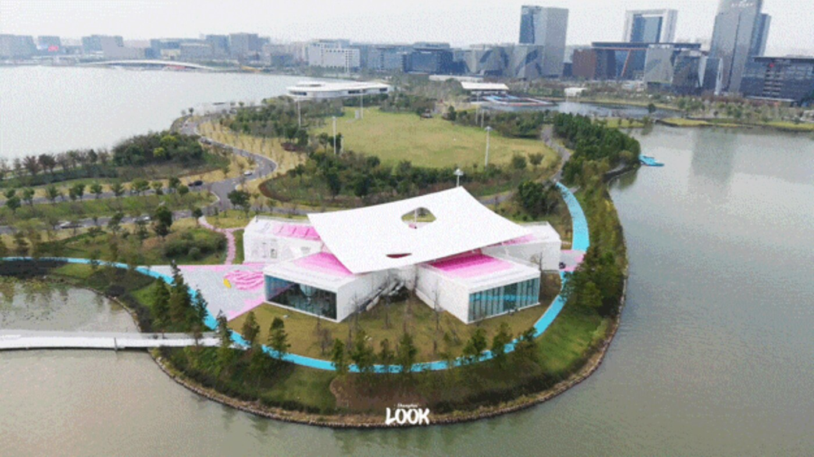
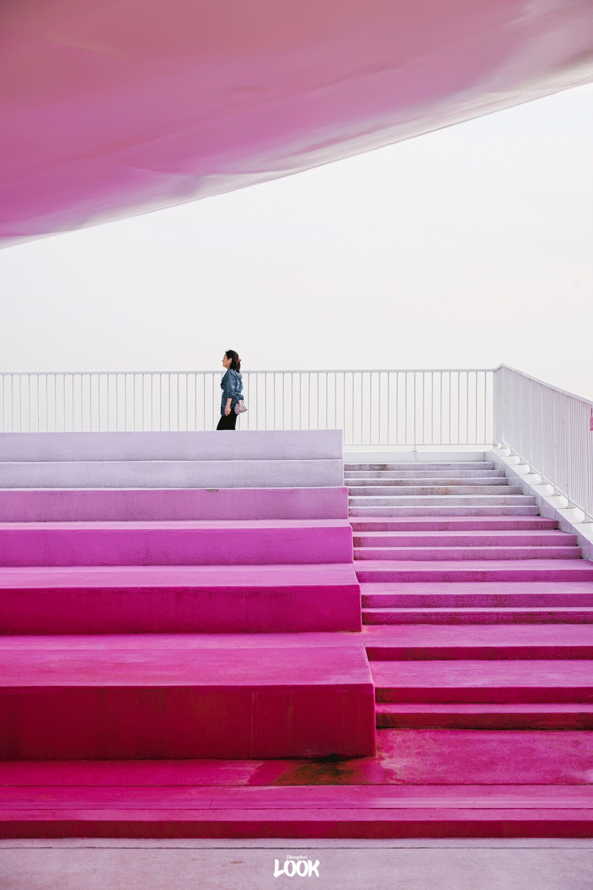
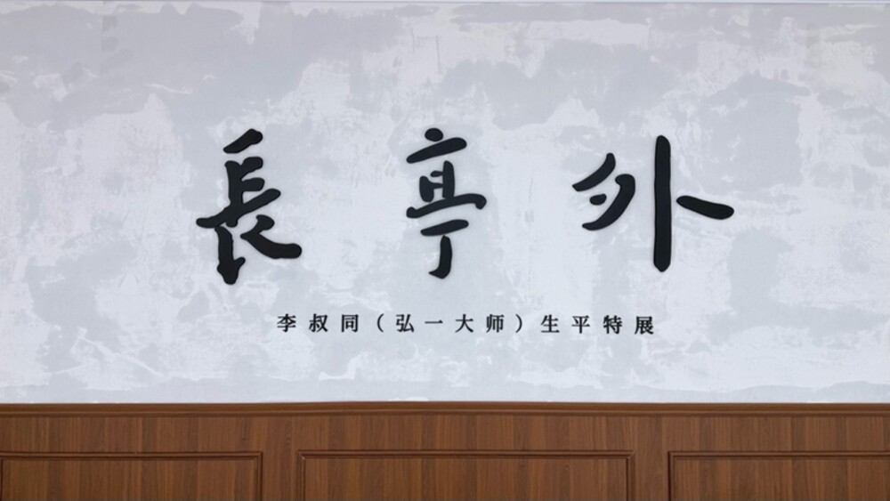

上周六上午十点刚过，16号线坐到滴水湖。
出站风比市区大一号，湖面被吹出一层细碎的鳞。我没往湖滨广场走，沿着环湖的路往北岛骑。草坡上立着一排比人还高的白色字母，LINGANG。
再往前，就看见那栋房子了。白色屋顶四角微微翘起，像一张被风鼓起来的帆，帆下面压着一块粉紫色的屋顶。

滴水湖北岛肆号美术馆。澎湃新闻·ShanghaiLOOK 摄影 Keroro
这是最近刚开馆的北岛肆号美术馆。
房子不是新建的。它原本是北岛上闲置了很久的肆号建筑，改造之后，成了临港“最美环湖建筑群”里新加的那一个。
地方不大，但值得挑个上午来。人少，光斜着打进白展厅，湖风从门口过。
— 01 —
先上屋顶，再进展厅
多数人到了门口，会直接往里进。我建议先绕到侧面的草坡。
草坡上是一段马卡龙色的阶梯，粉、紫、白一层层往上铺，走到底就是屋顶露台。

美术馆屋顶的粉紫渐变阶梯。澎湃新闻·ShanghaiLOOK 摄影 Keroro
上午太阳在东边，光不刺眼。站在露台上往下看，S形的白桥把湖畔绿地串起来，远处是金融湾一片新楼的轮廓。
风很大，帽子要按住。
先上屋顶，再进展厅，是我这趟最想告诉你的一件事。反过来走，看完展出来，屋顶的光已经变了。
四间纯白展厅围在中间。从空中看，屋顶像花瓣散开，这个角度站在地面是看不到的。
— 02 —
一间小镇美术馆，塞了四个展
这里是南汇新城镇指导下的镇级美术馆，面积不大，却分了常设展厅、特展厅、数字展厅和美育空间。
开馆特展叫《长亭外》，讲李叔同。
15件藏品，从天津的富贵少年，到上海的名士，再到虎跑定慧寺落发。展厅里循环放着朴树翻唱的《送别》，走完一圈，像把一个人的一生轻轻翻了一遍。

《长亭外——李叔同（弘一大师）生平特展》现场。新华网 史依灵 摄
旁边常设展叫《纷与寂》，35幅手书遗墨，手稿、信札、题跋都有，会定期更换。字很小，凑近看，一笔一划都不急。
策展人浦泉耀说了一句话，我在展厅里站了很久：
真正的告别不是失去什么，而是终于肯向自己靠近。
直面湖景的那间展厅，现在是《透过阳光》。雕塑家杨科朋用泥土捏了个叫阿布的小孩，让他坐在云上；绿植艺术家陈涛在旁边种了一座小森林。
还有个数字展厅，雷达会捕捉人的移动，屏幕里的小动物跟着你走。小朋友进去基本就喊不出来了。
出口有周边商店和咖啡馆。买不买随意，坐一会儿是真的舒服。
— 03 —
去之前，这几件事先记下
地址 浦东新区环湖北路一路，滴水湖北岛4号
门票 免费，入口现场预约即可
时间 周二至周四 10:00—18:00；周五至周日 10:00—21:00
闭馆 每周一
提醒 《长亭外》特展展到2027年1月23日，常设展的35幅会轮换
周五到周日开到晚上九点，这个时间对上班族很友好。下班坐16号线过来，看完展出来，回去的车还赶得上。
不过要拍屋顶，还是上午好。下午背光，粉紫色会发灰。
— 04 —
看完展，湖还在等你
北岛只是环湖的一小段。出馆继续骑，一号码头、滴水云厅都在湖边，上海天文馆也不远。
湖边的风把时间吹得很慢。带块野餐垫，在草坪上坐半小时，比赶下一个景点划算。
交通也在变。市域铁路南汇支线今年8月已经全线结构贯通，以后会设滴水湖北站，从市区过来还能再快一点。具体开通时间，等官方消息。
艺术和生活之间，
不用换乘。
上海看展，大家习惯往西岸、外滩跑。临港远，这是实话。但远也有远的好处——从展厅出来，风一吹，湖就在眼前，不用再钻进地铁，也不用排队等一杯咖啡。
一座镇级美术馆，安安静静开在岛上。它不宏大，但把“看展”这件事，还给了日常。
你去过北岛了吗？或者，滴水湖还有哪个角落值得一个上午？评论区聊聊，我下次去。